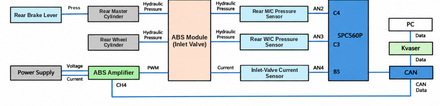
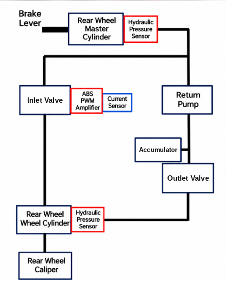
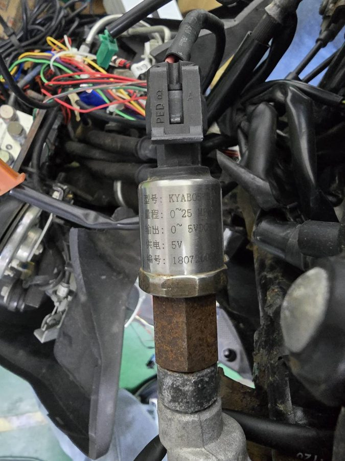
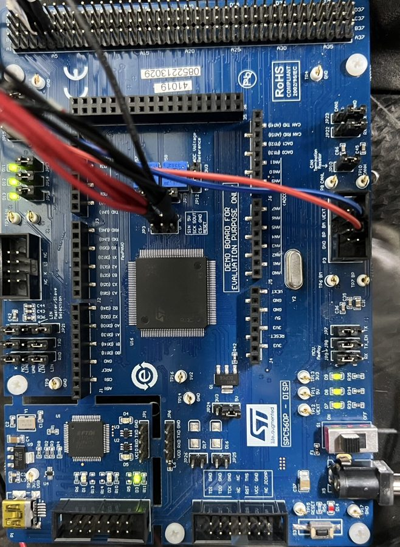
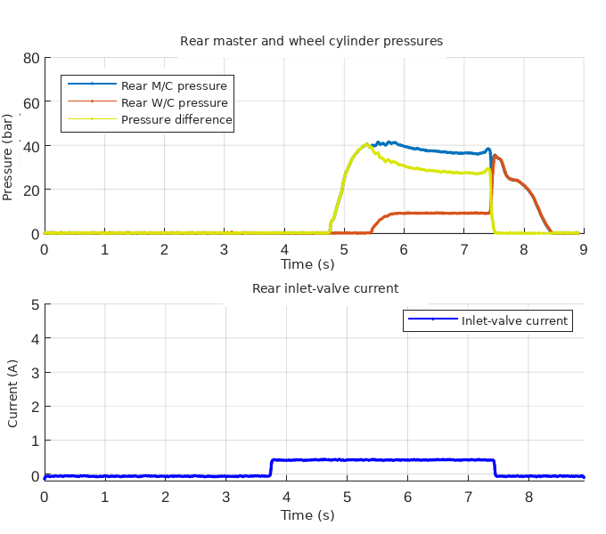

In hard braking, an ABS holds the wheel slip ratio near 0.2. To compute slip it needs the vehicle speed, which is usually estimated with an IMU. An IMU cannot tell real deceleration from disturbances, and it loses the true speed once a wheel slips. Our approach is to get the vehicle speed from the braking force instead.
The braking force follows the caliper pressure, but pressure sensors are costly. So we asked a narrower question first: can the current of the ABS inlet (pressure-increase) valve replace a pressure sensor?
We built the test bench on a real rear-wheel ABS hydraulic circuit. An SPC560P microcontroller samples the master-cylinder pressure, the wheel-cylinder pressure and the inlet-valve current through its ADC, averages each signal over 1 s and sends the values over CAN. A Kvaser interface passes the CAN messages to a PC for logging and analysis.



We drove the inlet valve at 100%, 74.2%, 73.8%, 73.4% and 73% duty under a 150 N brake force. The plunger stayed fully pulled in down to 73.8% and did not pull in at 73%. At 73.4% it was unstable: at 150 N it was pushed open once the pressure difference across it reached about 40 bar, while at 100 N (about 33 bar) it stayed closed.

At 100% duty the valve current fell while the valve was on. The drop had the same slope at 0 N, 100 N and 150 N, so it does not come from pressure. We traced it to coil heating at high current and long on-time.
At 69% and 100% duty, the current rise repeated closely every time the valve switched on. But the rise curves at 50 N, 100 N and 150 N overlapped, so they carried no clear pressure information.